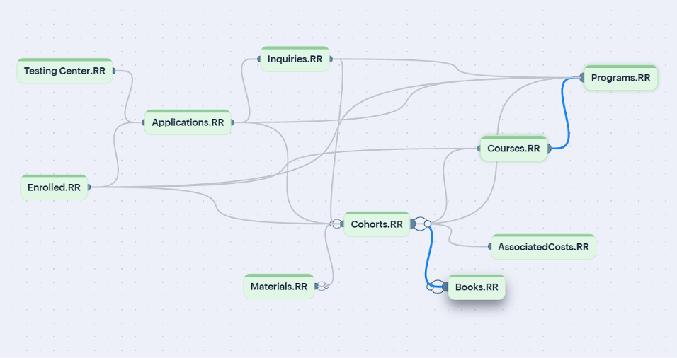

I turn crowded spreadsheets into CRM systems people actually use.
I'm a CRM administrator in training with eight years of experience in data, reporting and higher education operations. I map how teams really work, then build the records, permissions and automation that keep everyone on the same page.
- InquiryFront desk form
- AppliedOnline portal
- Docs and testingAuto reminders
- Ready for reviewCoordinator notified
- AcceptedOr waitlisted in order
- EnrolledSeat confirmed

Featured project: Red Rock Technical College admissions
Five teams at a fictional technical college were sharing one spreadsheet of more than 1,000 rows that anyone could edit. I interviewed each team, mapped the admissions process and designed a Zoho CRM that takes a student from first inquiry to enrollment.
Read the case studyWhat I work on
CRM design and administration
Needs analysis, data models, modules, fields and profiles built around who needs to see what.
Workflow automation
Hand-offs, reminders and status changes that happen on their own, so nothing depends on someone remembering.
Data and reporting
Dashboards and BI reports for leadership, from ticket sales at a performing arts center to admissions at a college.